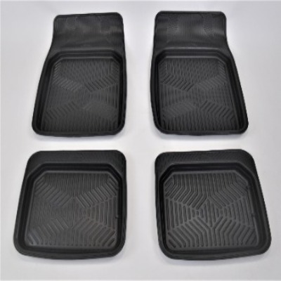

Коврики резиновые

Комплект резиновых ковриков с высоким бортом. Защищают салон от грязи и влаги. Подходят для большинства седанов.
Цена: 2 490 ₽
Характеристики
| Материал | Резина |
|---|---|
| Цвет | Чёрный |
| Совместимость | Toyota Camry, Kia Rio, Lada Vesta |
| Количество в комплекте | 4 шт. |